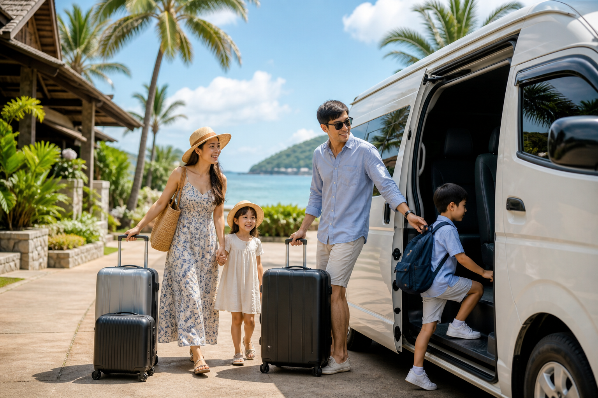

คู่มือรถตู้ภูเก็ต
เที่ยวภูเก็ตครอบครัว ควรเลือกรถตู้แบบไหน
คู่มือเลือกรถตู้ภูเก็ตสำหรับครอบครัว เปรียบเทียบจำนวนที่นั่ง รับส่งสนามบินเมื่อมีเด็ก จังหวะวันเที่ยว จัดการรถเข็นและสัมภาระ เช็คลิสต์จอง และ FAQ
26 สิงหาคม 2026

Infinity Transport Phuket — เที่ยวภูเก็ตครอบครัว ควรเลือกรถตู้แบบไหน การพาครอบครัวไปเที่ยวภูเก็ต มีหลายเรื่องที่ต้องคิดมากกว่าแค่เลือกที่พักและหาดสวย ๆ จังหวะของเด็กเล็ก ปริมาณกระเป๋า รถเข็นเด็ก การลงเครื่องหลังเที่ยวบินยาว และการเดินทางหลายจุดในวันเดียว ล้วนมีผลต่อว่าทริปจะสนุกหรือเหนื่อยเกินไป หากใช้รถสาธารณะหรือเรียกรถหลายเที่ยว ครอบครัวหลายคนต้องยืนรอ แบกของ และปรับตัวตามตารางที่ไม่ยืดหยุ่น
ทางเลือกที่หลายครอบครัวใช้แล้วรู้สึกว่าคุ้มค่าคือ รถตู้ภูเก็ต พร้อมคนขับ ไม่ว่าจะเป็น รถตู้รับส่งสนามบินภูเก็ต ในวันมาถึง เช่ารถตู้ภูเก็ตพร้อมคนขับ เหมาวันเที่ยว หรือ รถตู้นำเที่ยวภูเก็ต แบบส่วนตัวที่คุณกำหนดจุดแวะและเวลาพักเองได้ บทความนี้รวบรวมแนวทางเลือกรถ จัดการสัมภาระ วางจังหวะวันเที่ยว และเช็คลิสต์จองสำหรับครอบครัวที่อยากให้ทริปภูเก็ตราบรื่นตั้งแต่ลงเครื่องจนถึงวันกลับ
คำตอบสั้นสำหรับ Featured Snippet:
ครอบครัวที่เที่ยวภูเก็ตควรเลือก รถตู้ภูเก็ต ตามจำนวนคนและสัมภาระ — ครอบครัวเล็ก 3–4 คนมักใช้ SUV ครอบครัว 4–8 คนเหมาะกับ Toyota All New (8–9 ที่นั่ง) กลุ่มใหญ่หรือหลายครอบครัวรวมกันใช้ Mercedes-Benz Sprinter (10–16 ที่นั่ง) แจ้งจำนวนเด็ก กระเป๋า และรถเข็นล่วงหน้าเพื่อให้ทีมงานจัดรถที่เหมาะสม
สารบัญ
1. ทำไมครอบครัวควรเลือกรถตู้ภูเก็ต
2. เลือกรถตู้อย่างไรให้เหมาะกับครอบครัว
3. รถตู้รับส่งสนามบินภูเก็ตเมื่อมีเด็ก
4. รถตู้นำเที่ยวภูเก็ต จังหวะวันเที่ยวที่เหมาะกับครอบครัว
5. จัดการรถเข็นเด็กและสัมภาระอย่างไร
6. ความปลอดภัยในการเดินทางครอบครัว
7. เช็คลิสต์จองรถตู้ครอบครัว
8. ทำไมลูกค้าจึงเลือก Infinity Transport & Travel Phuket
9. คำถามที่พบบ่อย
10. สรุปท้ายบทความ
11. ติดต่อเรา (CTA)
ทำไมครอบครัวควรเลือกรถตู้ภูเก็ต
การเที่ยวภูเก็ตแบบครอบครัวมีความซับซ้อนกว่าการเดินทางคนเดียวหรือคู่รัก เพราะต้องคำนึงถึงหลายปัจจัยพร้อมกัน ทั้งอายุของสมาชิก จังหวะพัก อาหาร ความทนทานต่อแดด และความต้องการพื้นที่ส่วนตัวบนรถ รถตู้ภูเก็ต แบบพร้อมคนขับช่วยแก้ปัญหาเหล่านี้ได้ในหลายมิติ โดยไม่ต้องให้พ่อแม่ขับรถเองในเส้นทางที่ไม่คุ้นเคย
ข้อดีหลักสำหรับครอบครัว
นั่งอยู่กันทั้งครอบครัวในคันเดียว ไม่ต้องแยกรถหรือรอคนละคัน ลดความเครียดเมื่อมีเด็กเล็กไม่ต้องขับรถเอง หลังลงเครื่องหรือหลังเที่ยวทั้งวัน ผู้ใหญ่ยังมีพลังดูแลเด็กต่อได้พื้นที่เก็บสัมภาระ รองรับกระเป๋าใบใหญ่ รถเข็นเด็ก กระเป๋าเป้ และอุปกรณ์ว่ายน้ำได้ดีกว่ารถเล็กยืดหยุ่นเรื่องเวลา แวะพักเมื่อเด็กเหนื่อย หาห้องน้ำ หรือซื้อของกินได้ตามจังหวะจริงความเป็นส่วนตัว ไม่แชร์รถกับคนแปลกหน้า ลดความกังวลเรื่องเชื้อโรคและสิ่งแวดล้อมบนรถคุ้มค่าเมื่อหารต่อหัว สำหรับครอบครัวใหญ่หรือกลุ่มญาติที่เดินทางด้วยกัน
เปรียบเทียบตัวเลือกการเดินทางสำหรับครอบครัว
ตัวเลือก เหมาะกับครอบครัวแบบไหน จุดเด่น ข้อควรพิจารณา แท็กซี่ / แอปเรียกรถ ครอบครัวเล็ก ทริปสั้น เรียกง่าย กระเป๋าเยอะหรือหลายจุดอาจไม่คุ้ม รถเช่าขับเอง พ่อแม่คุ้นเส้นทาง อิสระสูง ต้องขับเอง จอดรถ และดูแลเด็กบนรถพร้อมกัน ทัวร์รวมกลุ่ม งบจำกัด ยอมตามตารางได้ ราคาต่อหัวต่ำกว่าเหมาคัน เวลาและจุดแวะยืดหยุ่นน้อย รถตู้ภูเก็ตพร้อมคนขับ ครอบครัวที่มีเด็ก / ผู้สูงอายุ / กระเป๋าเยอะ สะดวก วางแผนเส้นทางได้ ควรจองล่วงหน้าช่วงฤดูท่องเที่ยว
เคล็ดลับ: ก่อนตัดสินใจ ลองนับจำนวนคนจริง รวมทารกที่นั่งตัก และจำนวนกระเป๋าใหญ่ แล้วส่งข้อมูลนี้ในข้อความเดียวตอนสอบถาม จะช่วยให้ทีมงานแนะนำรุ่นรถได้ตรงกว่าการเดาเอง
ดูภาพรวมบริการได้ที่ หน้ารวมบริการเดินทางภูเก็ต และรายละเอียดเฉพาะด้านรถตู้ที่ หน้ารถตู้ภูเก็ตพร้อมคนขับ หรือเริ่มต้นจาก หน้าแรก Infinity Transport & Travel Phuket
สถานการณ์ที่ครอบครัวมักเลือกรถตู้มากที่สุด
สถานการณ์ ทำไมรถตู้ตอบโจทย์ วันแรกหลังลงเครื่อง ลดการยืนรอและแบกกระเป๋าหลายใบพร้อมเด็ก เที่ยวหลายจุดในวันเดียว ไม่ต้องเรียกรถซ้ำหรือหาที่จอดทุกแห่ง พาเด็กและผู้สูงอายุร่วมกัน ปรับจังหวะพักและแวะห้องน้ำได้ตามต้องการ ทริป 3–5 วันในเกาะ ใช้รับส่งสนามบิน + เหมาวันเที่ยวสลับกันได้ ญาติหลายครอบครัวมาพร้อมกัน นั่งคันเดียวหรือประสานหลายคันผ่านทีมงานเดียว
ข้อมูลภาพรวมการท่องเที่ยวประเทศไทยอ้างอิงได้จาก การท่องเที่ยวแห่งประเทศไทย (ททท.)
เลือกรถตู้อย่างไรให้เหมาะกับครอบครัว
การเลือกรถไม่ใช่แค่ดูว่า "นั่งได้กี่คน" แต่ต้องคิดถึงพื้นที่สำหรับคาร์ซีท รถเข็น กระเป๋า และความสบายระหว่างทาง โดยเฉพาะทริปครอบครัวที่มักมีสัมภาระมากกว่าการเดินทางแบบคู่รักหรือธุรกิจ
Infinity Transport & Travel Phuket มีรถหลายรุ่นให้เลือกตามขนาดครอบครัว ข้อมูลจำนวนที่นั่งด้านล่างอ้างอิงจาก หน้ารุ่นรถของเรา โดยตรง
ตารางเปรียบเทียบรุ่นรถตามขนาดครอบครัว
รุ่นรถ จำนวนที่นั่ง เหมาะกับครอบครัวแบบไหน หมายเหตุสำหรับครอบครัว SUV 3–4 ที่นั่ง คู่รักที่มีเด็ก 1 คน หรือครอบครัวเล็ก คล่องตัว แต่พื้นที่เก็บของจำกัดกว่ารถตู้ Toyota All New 8–9 ที่นั่ง ครอบครัว 4–8 คน พร้อมสัมภาระ ตัวเลือกยอดนิยมสำหรับครอบครัวภูเก็ต Toyota Alphard 4 ที่นั่ง ครอบครัวที่ต้องการความสบายและความเป็นส่วนตัวสูง เน้นความนุ่มและเงียบ ไม่เน้นจำนวนที่นั่งมาก Mercedes-Benz 2 ที่นั่ง คู่รัก / ผู้ใหญ่ 2 คน เหมาะทริปส่วนตัวมากกว่าครอบครัวใหญ่ Mercedes-Benz Sprinter 10–16 ที่นั่ง ครอบครัวใหญ่ ญาติหลายครอบครัว หรือกลุ่มเพื่อนพาลูก รองรับคนจำนวนมากในคันเดียว
แนวทางเลือกรถตามสถานการณ์จริง
ครอบครัว 2 ผู้ใหญ่ + เด็ก 1–2 คน + กระเป๋า 3–4 ใบ
SUV (3–4 ที่นั่ง) อาจพอได้หากสัมภาระไม่มาก แต่หากมีรถเข็นเด็กหรือกระเป๋าใบใหญ่หลายใบ แนะนำให้ปรึกษาทีมงานว่า Toyota All New จะสบายกว่าหรือไม่
ครอบครัว 2 ผู้ใหญ่ + เด็ก 2–3 คน + คาร์ซีท + กระเป๋าเยอะ
Toyota All New (8–9 ที่นั่ง) มักเป็นตัวเลือกที่สมดุลที่สุด เพราะมีที่นั่งและพื้นที่เก็บของรองรับครอบครัวขนาดกลางได้ดี
ครอบครัวที่ต้องการความสบายสูง ไม่เน้นจำนวนคนมาก
Toyota Alphard (4 ที่นั่ง) เหมาะกับครอบครัวที่อยากได้ความนุ่มและความเป็นส่วนตัว โดยไม่ต้องนั่งแน่น
ญาติหลายครอบครัวรวมกัน 10 คนขึ้นไป
Mercedes-Benz Sprinter (10–16 ที่นั่ง) ช่วยให้ทุกคนอยู่ในรถคันเดียว ลดความยุ่งยากในการประสานหลายคัน
ครอบครัวที่ต้องการความหรูและเงียบ ไม่เน้นจำนวนที่นั่งมาก
Mercedes-Benz (2 ที่นั่ง) เหมาะกับคู่รักหรือผู้ใหญ่ 2 คนที่มาพักผ่อนแบบส่วนตัว มากกว่าครอบครัวที่มีเด็กหลายคน — หากมีลูกร่วมเดินทาง ควรพิจารณา SUV หรือ Toyota All New แทน
คำคมจากทีมวางแผนทริป:
"รถที่เหมาะกับครอบครัวไม่ใช่รถที่นั่งเต็มทุกที่นั่ง แต่คือรถที่เหลือพื้นที่ให้เด็กพักและให้กระเป๋าอยู่ได้โดยไม่แออัด"
เปรียบเทียบรุ่นรถเพิ่มเติมได้ที่ หน้ารุ่นรถของเรา และดูแนวทางประเมินรายละเอียดบริการที่ หน้าราคา
รถตู้รับส่งสนามบินภูเก็ตเมื่อมีเด็ก
วันแรกที่ลงเครื่องมักเป็นช่วงที่ครอบครัวเหนื่อยที่สุด เด็กอาจงอแงหลังเที่ยวบิน ผู้ใหญ่ต้องแบกกระเป๋า และทุกคนยังไม่คุ้นเส้นทางในเกาะ รถตู้รับส่งสนามบินภูเก็ต ที่จองล่วงหน้าช่วยให้ทริปเริ่มต้นได้อย่างเรียบร้อย โดยไม่ต้องต่อรองราคาหน้างานหรือหาที่จอดเอง
ท่าอากาศยานนานาชาติภูเก็ตมีผู้โดยสารหนาแน่นในช่วงฤดูท่องเที่ยวและวันหยุดยาว ข้อมูลทั่วไปเกี่ยวกับสนามบินสามารถอ้างอิงได้จาก เว็บไซต์ทางการของท่าอากาศยานภูเก็ต
ทำไมครอบครัวควรจองรับส่งสนามบินล่วงหน้า
ทราบจุดนัดพบและช่องทางติดต่อคนขับก่อนลงเครื่อง ลดความสับสนเมื่อมีเด็กรออยู่
ไม่ต้องยืนรอคิวรถในช่วงที่มีหลายเที่ยวบินลงพร้อมกัน
เดินทางตรงถึงที่พักโดยไม่ต้องเปลี่ยนพาหนะระหว่างทาง
จัดการกระเป๋าและรถเข็นเด็กได้ง่ายกว่าการเรียกรถเฉพาะหน้า
สามารถแจ้งเลขเที่ยวบินให้ทีมงานติดตามสถานะและปรับเวลารับได้
ข้อมูลที่ครอบครัวควรแจ้งตอนจองรับส่งสนามบิน
ข้อมูล เหตุผล เลขเที่ยวบินและเวลาที่คาดว่าจะถึง ช่วยวางแผนเวลารับและติดตามหากล่าช้า จำนวนผู้ใหญ่และเด็ก (ระบุอายุโดยประมาณ) ช่วยเลือกรุ่นรถและอุปกรณ์เสริม จำนวนกระเป๋าใหญ่และรถเข็นเด็ก ประเมินพื้นที่เก็บของ ชื่อที่พักหรือที่อยู่ปลายทาง วางแผนเส้นทางและเวลาเดินทาง ความต้องการคาร์ซีทหรือเบาะเสริม ตรวจสอบความพร้อมก่อนวันเดินทาง ช่องทางติดต่อฉุกเฉินในวันเดินทาง อัปเดตได้ทันทีหากแผนเปลี่ยน
คำตอบสั้นสำหรับ Featured Snippet:
จอง รถตู้รับส่งสนามบินภูเก็ต สำหรับครอบครัวโดยแจ้ง "เลขเที่ยวบิน + จำนวนผู้ใหญ่/เด็ก + กระเป๋า/รถเข็น + ชื่อที่พัก + ความต้องการคาร์ซีท" ในข้อความเดียว และอัปเดตทีมงานทันทีหากเที่ยวบินล่าช้า
โซนที่พักยอดนิยมจากสนามบิน (สำหรับวางแผนเวลา)
โซนที่พัก ลักษณะโดยทั่วไป หมายเหตุสำหรับครอบครัว ในยาง / ไม้ขาว / ในทอน ใกล้สนามบิน เด็กเหนื่อยน้อยกว่า เดินทางสั้น กมลา / สุรินทร์ / บางเทา ฝั่งตะวันตกตอนบน เงียบกว่า แต่เผื่อเวลาเดินทาง ป่าตอง แหล่งท่องเที่ยวหนาแน่น ควรเผื่อรถติดช่วงเย็น กะตะ / กะรน หาดและที่พักยอดนิยม แจ้งชื่อที่พักให้ชัดเพื่อวางแผนจอด เมืองภูเก็ต เมืองเก่าและธุรกิจ เหมาะเช็คอินเช้าหรือทริปสั้น ฉลอง / ราไวย์ ทางใต้ของเกาะ เผื่อเวลาเดินทางมากกว่าโซนเหนือ
รายละเอียดบริการรับส่งดูเพิ่มได้ที่ บริการรถตู้ภูเก็ต และ หน้ารวมบริการ
รถตู้นำเที่ยวภูเก็ต จังหวะวันเที่ยวที่เหมาะกับครอบครัว
รถตู้นำเที่ยวภูเก็ต แบบส่วนตัวให้ครอบครัวกำหนดจุดหมายและเวลาพักเองได้ ต่างจากทัวร์รวมกลุ่มที่ต้องเดินตามตารางของคนอื่น อย่างไรก็ตาม การวางแผนวันเที่ยวสำหรับครอบครัวต้องคิดเรื่อง "จังหวะ" มากกว่าการใส่จุดหมายให้ครบทุกที่ดัง
หลักการวางจังหวะวันเที่ยวครอบครัว
อย่าใส่จุดหมายมากเกินไป ครอบครัวที่มีเด็กเล็กมักสนุกกับ 2–4 จุดต่อวัน มากกว่าการวิ่งเร่ง 6–8 จุดเผื่อเวลาพักและมื้ออาหาร อย่างน้อยหนึ่งช่วงกลางวันที่ไม่ต้องรีบจัดจุดที่ต้องเดินไกลไว้ช่วงเช้า เมื่อเด็กยังมีพลัง แล้วค่อยไปจุดพักผ่อนช่วงบ่ายมีแผนสำรอง หากฝนตกหรือเด็กเหนื่อย สามารถเปลี่ยนเป็นคาเฟ่ ห้าง หรือกลับที่พักได้เผื่อรถติดช่วงเย็น โดยเฉพาะโซนท่องเที่ยวหลัก
ตารางไอเดียจังหวะวันเที่ยวตามอายุเด็ก
กลุ่มอายุเด็ก จำนวนจุดที่แนะนำ/วัน แนวทางจังหวะ ตัวอย่างธีม ทารก–เด็กเล็ก (0–3 ปี) 1–2 จุด พักบ่อย หลีกเลี่ยงแดดจัด หาดสั้น ๆ + กลับที่พักบ่าย วัยเดินทาง (4–7 ปี) 2–3 จุด ผสมเดินเล่นและพัก เมืองเก่า + คาเฟ่ + ชายหาด วัยเรียน (8–12 ปี) 3–4 จุด เพิ่มกิจกรรมได้เล็กน้อย จุดชมวิว + หาด + ตลาด มีผู้สูงอายุร่วมด้วย 2–3 จุด ลดการเดินไกล เน้นจอดใกล้จุดหมาย เมืองเก่า + จุดชมวิว + พักกลางวัน
รูปแบบบริการที่ครอบครัวนิยมใช้
ครึ่งวันเช้า: ออกสาย ๆ หลังอาหารเช้า เที่ยว 1–2 จุด กลับที่พักก่อนบ่ายครึ่งวันบ่าย–เย็น: พักเช้าที่ที่พัก ออกบ่ายไปชายหาดหรือจุดชมพระอาทิตย์ตกเต็มวัน: ออกเช้า มีมื้อกลางวัน 2–3 จุดหลัก กลับเย็นวันมาถึง: รับจากสนามบิน แวะจุดสั้นระหว่างทาง (ถ้าพลังงานพอ) แล้วเช็คอิน
เคล็ดลับ: บอกทีมงานว่า "อยากให้วันนี้สบาย ไม่เร่ง" ตั้งแต่ตอนจอง จะช่วยให้คนขับช่วยจัดลำดับเส้นทางให้เหมาะกับครอบครัวมากกว่าการยัดทุกจุดดังไว้ในวันเดียว
ข้อมูลสถานที่ท่องเที่ยวทั่วไปอ้างอิงได้จาก การท่องเที่ยวแห่งประเทศไทย (ททท.) แล้วนำจุดที่สนใจมาคุยกับทีมงานเพื่อจัดลำดับเส้นทางให้เหมาะกับเวลาจริง
ตัวอย่างธีมทริปครอบครัวที่สอบถามบ่อย
วันชายหาดสบาย ๆ: ที่พัก → หาดใกล้โซนที่พัก → มื้อกลางวัน → กลับก่อนเย็นเมืองเก่าและของกิน: เมืองเก่าภูเก็ต → คาเฟ่หรือร้านอาหาร → ตลาดเย็น (ถ้าเด็กไม่เหนื่อย)ชมวิวและถ่ายรูป: จุดชมวิวช่วงเช้า → พักกลางวัน → จุดพระอาทิตย์ตกช่วงเย็นวันฝนตก: ห้าง อควาเรียม หรือกิจกรรมในร่ม แทนการฝืนไปหาดวันสุดท้ายก่อนกลับ: เช็คเอาท์ → แวะซื้อของฝาก → ส่งสนามบินตรงเวลา
หากต้องการดูแนวทางราคาตามรูปแบบบริการ สามารถเริ่มจาก หน้าราคาบริการ แล้วสอบถามรายละเอียดเฉพาะทริปครอบครัวได้ที่ หน้าติดต่อ
จัดการรถเข็นเด็กและสัมภาระอย่างไร
สัมภาระมักเป็นปัจจัยที่ครอบครัวมองข้ามจนกว่าจะถึงวันเดินทาง การ เช่ารถตู้ภูเก็ตพร้อมคนขับ ที่เลือกรุ่นรถถูกต้องจะช่วยให้ทุกอย่างอยู่บนรถได้โดยไม่แออัด แต่การเตรียมตัวล่วงหน้าก็สำคัญไม่แพ้กัน
สิ่งที่ควรแจ้งทีมงานเรื่องสัมภาระ
จำนวนกระเป๋าใบใหญ่ (check-in size)
จำนวนกระเป๋าถือ / เป้
มีรถเข็นเด็กหรือไม่ (พับได้ / ไม่พับ)
มีคาร์ซีทหรือเบาะเสริมหรือไม่
มีอุปกรณ์พิเศษ เช่น ห่วงยางเด็ก เก้าอี้ชายหาด กล้องถ่ายรูป
ตารางแนวทางจัดสัมภาระตามรุ่นรถ
รุ่นรถ แนวทางใช้งานสัมภาระ คำแนะนำสำหรับครอบครัว SUV (3–4 ที่นั่ง) เหมาะกระเป๋าน้อย หากมีรถเข็น + กระเป๋า 4 ใบขึ้นไป ควรปรึกษาก่อน Toyota All New (8–9 ที่นั่ง) พื้นที่เก็บของหลังรถกว้าง เหมาะครอบครัว 4–6 คน + กระเป๋า + รถเข็น Toyota Alphard (4 ที่นั่ง) เน้นความสบายมากกว่าปริมาณ เหมาะครอบครัวเล็กที่ต้องการความหรู Mercedes-Benz Sprinter (10–16 ที่นั่ง) พื้นที่เก็บของมาก เหมาะกลุ่มใหญ่ที่มีกระเป๋าหลายใบ
เช็คลิสต์จัดสัมภาระก่อนออกจากที่พัก
กระเป๋าใบใหญ่เก็บไว้ท้ายรถ ไม่วางกั้นทางเดินในรถ
กระเป๋าเป้ใส่ของจำเป็นสำหรับเด็ก (ขนม น้ำ ผ้าเช็ด ยา) เก็บไว้ใกล้มือ
รถเข็นเด็กพับแล้วเก็บอย่างปลอดภัย ไม่ให้เลื่อนระหว่างขับ
ของเปียก (ชุดว่ายน้ำ ผ้าเช็ดตัว) ใส่ถุงแยกจากกระเป๋าหลัก
แจ้งคนขับหากมีของเปราะบางหรืออุปกรณ์มีค่า
เคล็ดลับ: แพ็คกระเป๋า "ของใช้รายวันบนรถ" แยกจากกระเป๋าใบใหญ่ จะช่วยให้ไม่ต้องเปิดกระเป๋าใหญ่ทุกครั้งที่เด็กต้องการอะไรระหว่างทาง
หลักการแพ็คกระเป๋าสำหรับครอบครัว
1. แยกกระเป๋ามือถือสำหรับวันเที่ยว ใส่ sunscreen หมวก น้ำ ขนม และเสื้อกันฝน
2. รถเข็นแบบพับ แจ้งล่วงหน้าเพื่อให้ทีมงานประเมินพื้นที่ท้ายรถ
3. ของเปียกใส่ถุงซิป ไม่ให้ชื้นกระจายไปกระเป๋าอื่น
4. ของมีค่าและเอกสาร เก็บไว้กับผู้ใหญ่ในแถวหน้า ไม่วางไว้ท้ายรถที่เข้าถึงยาก
5. นับจำนวนกระเป๋าใหญ่ก่อนขึ้น–ลงรถทุกครั้ง ลดโอกาสลืมของเมื่อย้ายจุดบ่อย
เปรียบเทียบรุ่นรถและพื้นที่เก็บของได้ที่ หน้ารุ่นรถของเรา
ความปลอดภัยในการเดินทางครอบครัว
ความปลอดภัยเป็นสิ่งที่ครอบครัวให้ความสำคัญเป็นอันดับแรก การใช้ รถตู้ภูเก็ต พร้อมคนขับมืออาชีพช่วยลดความเสี่ยงจากการขับรถเองในเส้นทางที่ไม่คุ้น แต่ยังมีเรื่องที่พ่อแม่ควรเตรียมและสื่อสารล่วงหน้า
มาตรการความปลอดภัยที่ควรใส่ใจ
คาร์ซีทและเบาะเสริม แจ้งความต้องการล่วงหน้า เพื่อให้ทีมงานตรวจสอบความพร้อมก่อนวันเดินทางเข้าออกรถอย่างปลอดภัย ให้เด็กรอจนกว่ารถจอดนิ่งและคนขับยืนยันว่าปลอดภัยคาดเข็มขัดทุกที่นั่ง รวมผู้ใหญ่ที่นั่งแถวหลัง เพื่อเป็นแบบอย่างให้เด็กไม่วางของหนักบนที่นั่ง ของควรเก็บในช่องที่กำหนด ไม่วางกั้นทางเดินหรือบังมุมมองแจ้งอาการเวียนหัวของเด็ก หากเส้นทางมีโค้งมาก คนขับอาจปรับความเร็วหรือแนะนำเส้นทางที่นุ่มกว่า
ตารางสถานการณ์และแนวทางรับมือ
สถานการณ์ แนวทางรับมือ เด็กเมารถ แจ้งคนขับล่วงหน้า เลือกเส้นทางที่โค้งน้อย เปิดหน้าต่างระบายอากาศ เที่ยวบินล่าช้า แจ้งทีมงานทันทีที่ทราบเวลาใหม่ ฝนตกหนัก ปรับแผนเป็นจุดในร่ม หรือเลื่อนกิจกรรมกลางแจ้ง เด็กหลงในที่คนหนาแน่น ตกลงจุดนัดพบภายในรถเป็นจุดนัดพบหลักของครอบครัว ลืมของบนรถ ติดต่อทีมงานทันที พร้อมระบุช่วงเวลาและจุดที่น่าจะลืม
คำคม:
"ความปลอดภัยของครอบครัวเริ่มจากการสื่อสารที่ชัดเจนตั้งแต่ตอนจอง — ไม่ใช่รอจนถึงวันเดินทาง"
สิ่งที่พ่อแม่ควรเตรียมบนรถ
ยาพื้นฐานสำหรับเด็ก (ยาแก้เมารถ ยาแก้แพ้ ถ้ามี)
น้ำดื่มและขนมเล็กน้อยสำหรับช่วงรถติด
ผ้าเช็ดเปียกและถุงขยะเล็ก ๆ
หมวกและครีมกันแดด โดยเฉพาะทริปกลางวัน
แบตสำรองและสายชาร์จ หากใช้แอปนำทางหรือติดต่อทีมงานบนมือถือ
การ เช่ารถตู้ภูเก็ตพร้อมคนขับ ที่มีการยืนยันรายละเอียดก่อนวันเดินทาง ช่วยให้ครอบครัวโฟกัสกับการดูแลเด็กได้มากขึ้น แทนการกังวลเรื่องเส้นทางและที่จอด
เช็คลิสต์จองรถตู้ครอบครัว
การเตรียมข้อมูลให้ครบก่อนติดต่อจอง จะช่วยให้ทีมงานประเมินรุ่นรถ เส้นทาง และรายละเอียดวันเดินทางได้แม่นยำขึ้น โดยไม่ต้องถามไปมาหลายรอบ
เช็คลิสต์ข้อมูลที่ควรเตรียมก่อนจอง
วันที่และช่วงเวลาที่ต้องการใช้บริการ
จำนวนผู้ใหญ่และเด็ก (ระบุอายุเด็กโดยประมาณ)
รูปแบบบริการ: รับส่งสนามบิน / ครึ่งวัน / เต็มวัน / หลายวัน
จุดรับและจุดส่ง (ชื่อที่พักหรือโซนที่พัก)
จุดหมายที่สนใจ หรืออย่างน้อยธีมทริป (หาด / เมืองเก่า / ชมวิว)
จำนวนกระเป๋าใหญ่ รถเข็น และอุปกรณ์พิเศษ
ความต้องการคาร์ซีทหรือเบาะเสริม
เลขเที่ยวบิน (หากรับจากสนามบิน)
ช่องทางติดต่อในวันเดินทาง
คำถามเรื่องเงื่อนไขการเปลี่ยนแปลงหรือยกเลิก
สิ่งที่ควรสอบถามผู้ให้บริการก่อนยืนยัน
1. รุ่นรถที่จัดให้เหมาะกับจำนวนคนและสัมภาระหรือไม่
2. จุดนัดพบและช่องทางติดต่อคนขับในวันเดินทาง
3. สามารถปรับจุดแวะระหว่างวันได้ในขอบเขตใด
4. รองรับคาร์ซีทหรือเบาะเสริมหรือไม่
5. รายละเอียดที่รวมและไม่รวมในบริการ
เคล็ดลับ: ส่งข้อมูลทั้งหมดใน LINE หรืออีเมลข้อความเดียว จะช่วยให้ทีมงานตอบกลับพร้อมคำแนะนำรุ่นรถและแนวทางเส้นทางได้เร็วขึ้น
สอบถามและจองได้ที่ หน้าติดต่อ Infinity Transport & Travel Phuket หรือดูแนวทางราคาเบื้องต้นที่ หน้าราคาบริการ
ทำไมลูกค้าจึงเลือก Infinity Transport & Travel Phuket
Infinity Transport & Travel Phuket ให้บริการ รถตู้ภูเก็ต พร้อมคนขับสำหรับครอบครัวและกลุ่มผู้เดินทางที่ต้องการความสะดวกในเส้นทางภูเก็ตและจังหวัดใกล้เคียง จุดเน้นของเราคือการสื่อสารที่ชัดเจน การแนะนำรุ่นรถจากข้อมูลจริง และการวางแผนเส้นทางให้เหมาะกับจังหวะของครอบครัว
สิ่งที่ทีมงานให้ความสำคัญ
รับฟังความต้องการของครอบครัวก่อนเสนอทางเลือก ไม่ยัดเยียดบริการที่ไม่จำเป็นแนะนำรุ่นรถจากข้อมูลจริงในกองรถ อ้างอิงจำนวนที่นั่งและลักษณะการใช้งานจริงช่วยประเมินเส้นทาง สำหรับทริปรอบเกาะและทริปข้ามจังหวัดสรุปรายละเอียดให้เข้าใจง่าย ทั้งจุดรับ–ส่ง เวลา และรูปแบบบริการมีช่องทางติดต่อหลายทาง เพื่อให้สอบถามและอัปเดตแผนได้สะดวก
ช่องทางติดต่อที่เป็นทางการ
เราไม่สรุปผลจากตัวเลขหรือรีวิวที่ไม่ได้ยืนยันในหน้านี้ แต่เชิญให้สอบถามรายละเอียดตามทริปครอบครัวของคุณโดยตรง เพื่อรับคำแนะนำที่ตรงกับจำนวนสมาชิก อายุเด็ก และจุดหมายจริง
เริ่มดูบริการได้ที่ หน้ารวมบริการ ศึกษารถตู้โดยเฉพาะที่ หน้ารถตู้ภูเก็ต และดูพาหนะเพิ่มเติมที่ หน้ารุ่นรถ
สรุปท้ายบทความ
การ เที่ยวภูเก็ตครอบครัว ที่สนุกและไม่เหนื่อยเกินไป เริ่มจากการเลือก รถตู้ภูเก็ต ที่เหมาะกับจำนวนคนและสัมภาระ ไม่ว่าจะเป็น SUV สำหรับครอบครัวเล็ก Toyota All New สำหรับครอบครัวขนาดกลาง Toyota Alphard สำหรับผู้ที่ต้องการความสบายพิเศษ หรือ Mercedes-Benz Sprinter สำหรับกลุ่มใหญ่
จุดสำคัญอีกอย่างคือการวางจังหวะวันเที่ยวให้พอดีกับเด็ก ไม่ใส่จุดหมายมากเกินไป จัดการรถเข็นและกระเป๋าล่วงหน้า และจอง รถตู้รับส่งสนามบินภูเก็ต ให้พร้อมตั้งแต่วันมาถึง การ เช่ารถตู้ภูเก็ตพร้อมคนขับ ที่สื่อสารชัดเจนและเลือกรถจากข้อมูลจริง จะช่วยให้ทริปครอบครัวราบรื่นตั้งแต่ต้นจนจบ
ก่อนจอง ควรเตรียมอย่างน้อยห้าอย่าง: วันเวลา จำนวนผู้ใหญ่/เด็ก จุดรับ–ส่ง ปริมาณสัมภาระ และลักษณะทริป จากนั้นสอบถามรายละเอียดรถและแนวทางราคาจากแหล่งข้อมูลจริงของบริการ
ติดต่อเรา (CTA)
กำลังวางแผนเที่ยวภูเก็ตครอบครัวและมองหารถตู้ที่เหมาะกับทุกคนอยู่ใช่ไหม?
ทีมงาน Infinity Transport & Travel Phuket พร้อมให้คำแนะนำเรื่องรุ่นรถ เส้นทาง ประเมินรายละเอียด และช่วยวางแผนการเดินทางให้เหมาะกับครอบครัวของคุณ
ติดต่อเราได้ผ่าน LINE หรือโทรหาเราได้ทันที
จองรถตู้ภูเก็ต
กลับไปหน้าบทความทั้งหมด
คำถามที่พบบ่อย (FAQ) ครอบครัวควรเลือกรถตู้รุ่นไหนดี ขึ้นกับจำนวนคนและสัมภาระ ครอบครัวเล็ก 3–4 คนอาจใช้ SUV (3–4 ที่นั่ง) ครอบครัว 4–8 คนมักเหมาะกับ Toyota All New (8–9 ที่นั่ง) กลุ่มใหญ่ 10 คนขึ้นไปใช้ Mercedes-Benz Sprinter (10–16 ที่นั่ง) ดูรายละเอียดได้ที่ หน้ารุ่นรถ
รถตู้ภูเก็ตเหมาะกับครอบครัวที่มีเด็กเล็กหรือไม่ เหมาะมาก เพราะสามารถพักเมื่อเหนื่อย แวะได้ตามจังหวะของเด็ก ไม่ต้องปรับตัวตามตารางทัวร์รวม และมีพื้นที่เก็บรถเข็นและกระเป๋าได้ดีกว่ารถเล็ก
ต้องแจ้งเรื่องคาร์ซีทล่วงหน้าไหม ควรแจ้ง เพื่อให้ทีมงานตรวจสอบความพร้อมก่อนวันเดินทาง ระบุอายุและน้ำหนักเด็กโดยประมาณด้วย
รถตู้รับส่งสนามบินภูเก็ตต้องแจ้งเลขเที่ยวบินไหม ควรแจ้ง เพราะช่วยให้ทีมงานวางแผนเวลารับและติดตามสถานะเที่ยวบินได้ดีขึ้น โดยเฉพาะเมื่อเดินทางพร้อมเด็กเล็ก
หากเที่ยวบินล่าช้าต้องทำอย่างไร แจ้งทีมงานทันทีที่ทราบเวลาใหม่ พร้อมอัปเดตสถานะผ่านช่องทางที่นัดไว้ เพื่อให้ปรับเวลารับได้อย่างเหมาะสม
วันเที่ยวครอบครัวควรใส่กี่จุด โดยทั่วไป 2–4 จุดต่อวันเหมาะกับครอบครัวที่มีเด็กเล็ก มากกว่าการใส่จุดถี่เกินไป แนะนำให้ปรึกษาทีมงานตามอายุเด็กและธีมทริป
นำรถเข็นเด็กไปได้ไหม ได้ แจ้งลักษณะรถเข็น (พับได้ / ไม่พับ) และจำนวนล่วงหน้า เพื่อให้ทีมงานประเมินพื้นที่เก็บของและรุ่นรถที่เหมาะสม
Toyota All New นั่งเต็ม 9 คนได้ไหมถ้ามีกระเป๋าเยอะ รถรองรับ 8–9 ที่นั่ง แต่หากมีสัมภาระมาก แนะนำไม่นั่งเต็มทุกที่นั่ง เพื่อให้เหลือพื้นที่เก็บกระเป๋าและรถเข็น ควรแจ้งจำนวนกระเป๋าให้ทีมงานประเมิน
ครอบครัวใหญ่หลายคันควรใช้รถกี่คัน หากรวมกัน 10 คนขึ้นไป Mercedes-Benz Sprinter (10–16 ที่นั่ง) อาจพอในคันเดียว หากเกินจำนวนที่นั่ง ทีมงานสามารถช่วยประสานหลายคันได้ แจ้งจำนวนคนและสัมภาระให้ครบ
รถตู้นำเที่ยวภูเก็ตใช้แบบครึ่งวันได้ไหม ได้ สามารถแจ้งช่วงเวลาและจุดหมายโดยประมาณ เพื่อให้ทีมงานช่วยออกแบบเส้นทางครึ่งวันที่เหมาะกับจังหวะครอบครัว
ราคาคิดอย่างไร ราคาขึ้นกับระยะทาง รูปแบบบริการ (เที่ยวเดียว / ครึ่งวัน / เต็มวัน) ประเภทรถ และช่วงเวลาเดินทาง ไม่มีราคาเดียวตายตัวสำหรับทุกทริป ดูแนวทางได้ที่ หน้าราคาบริการ หรือขอประเมินเฉพาะทริปจากทีมงาน
จองผ่านช่องทางไหนได้บ้าง ติดต่อได้ผ่านโทรศัพท์ 062 664 4542, LINE ที่ https://line.me/ti/p/HOu32mNzEG, อีเมล infinitytransporttravel@gmail.com หรือผ่าน หน้าติดต่อบนเว็บไซต์
หากต้องการเปลี่ยนแผนหลังจองแล้วทำได้หรือไม่ สามารถแจ้งทีมงานเพื่อขอเปลี่ยนแปลงได้ เงื่อนไขอาจต่างกันตามรายละเอียดการจองแต่ละครั้ง แนะนำให้ยืนยันเงื่อนไขไว้ตั้งแต่ขั้นตอนแรก
ต้องจองล่วงหน้ากี่วัน ช่วงปกติสามารถสอบถามล่วงหน้า 1–2 วันได้ แต่ช่วงฤดูท่องเที่ยว วันหยุดยาว หรือช่วงปิดเทอม แนะนำให้ติดต่อเร็วขึ้นเมื่อทราบวันเดินทาง เพื่อให้ทีมงานจัดรถและรุ่นที่เหมาะกับครอบครัวได้ทัน